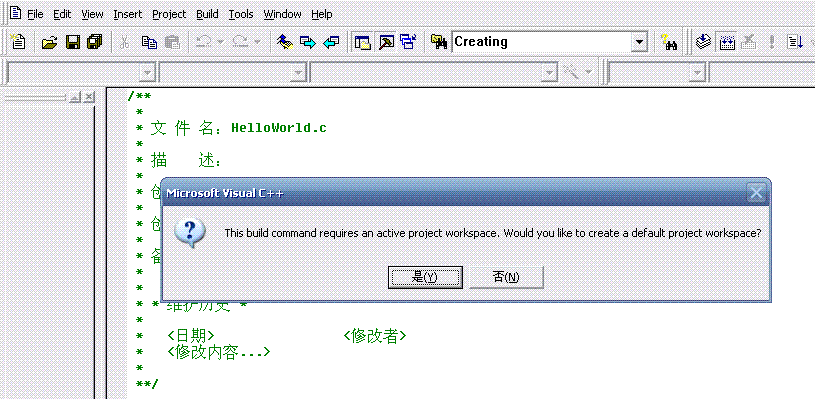
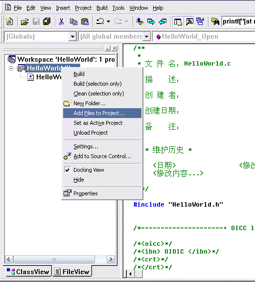
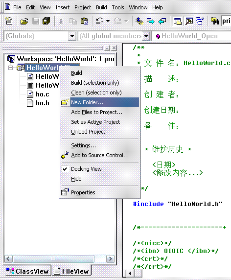
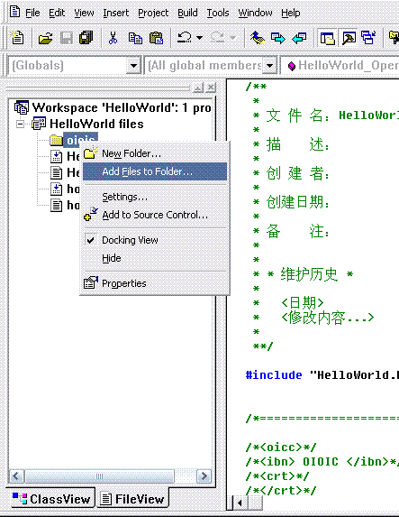
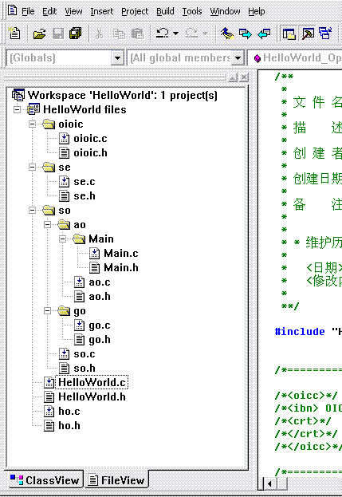
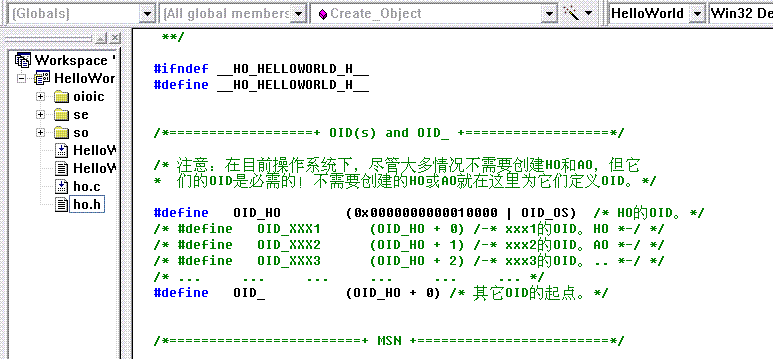
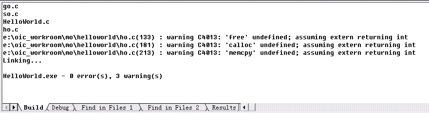
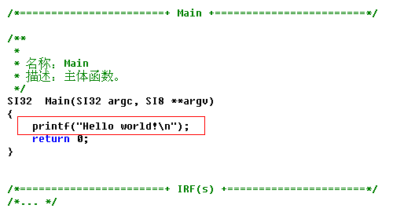

Historical primer (1.0.6): old API and VC6 steps are references only. Use the current tutorial and build guide. Current guide
Chapter 2 : Hello, World
Write a "Hello world" program to know the code tree structure of an OIOIC program. (Download its source code)
Step 1: In command line, use oicc to create a "HelloWorld" node of MO.
When create an HO node, the name of parent directory of the HO node must be the corresponding lowercase (NOTE: Windows' folder name is case-insensitive.), that is, MO is "mo", CO is "co", RO is "ro". If no, oicc will automatically create one for you. Therefore in this case, if there was not an "mo" folder in the specified directory (E:\OIC_Workroom), oicc has made one.
Now, a "HelloWorld" node has appeared in the "E:\OIC_Workroom\mo" directory.
Step 2: Create an "oioic" folder in the "E:\OIC_Workroom\mo\HelloWorld" directory, and copy oioic.c & oioic.h files to the "oioic" folder.
Step 3: Create a VC project for the "HelloWorld".
Use VC (VC6.0 in this book) to open the "E:\OIC_Workroom\mo\HelloWorld\HelloWorld.c", then build it. In the pop-up dialog box, click "Yes" to create the VC project of the "HelloWorld" in the "E:\OIC_Workroom\mo\HelloWorld" directory.

Step 4: Add all .c and .h files and the "oioic" folder (including its all .c and .h files) in the "HelloWorld" folder into the project.
In the "FileView" of the "Workspace" window, add all .c and .h files and the "oioic" folder (including its all .c and .h files) in the "E:\OIC_Workroom\mo\HelloWorld" directory into the project.
1. Add in all .c and .h files in the "E:\OIC_Workroom\mo\HelloWorld" directory.

Locate the "E:\OIC_Workroom\mo\HelloWorld" directory, then select the "HelloWorld.h", "ho.h" and "ho.c" files (the "HelloWorld.c" file has been in.), click "OK" to insert the three files into the project.


2. Add in the "oioic.h" and "oioic.c" files in the "E:\OIC_Workroom\mo\HelloWorld\oioic" directory.

As follows, type "oioic", click "OK" to create an "oioic" folder.



Locate the "E:\OIC_Workroom\mo\HelloWorld\oioic" directory, then select the "oioic.c" and "oioic.c" files, click "OK" to insert them into the project.

Step 5: In the same way, add "se" and "so" directory and their subdirectories (including all .c and .h files in them) into the project.

Step 6: Referring to the template of OID definition in "ho.h" file, define the required OID(s).
Find the template of OID definition in "ho.h" file.

Uncomment "OID_HO" and "OID_", and define them.

Step 7: According to hierarchy, include the required .h file(s) for the .h file(s) in each directory.
1. In the "ho.h" file: #include "oioic/oioic.h"
2. In the "HelloWorld.h" file: #include "ho.h"
3. In the "so.h" file: #include "../ho.h"
4. In the "ao.h" and "go.h" files: #include "../so.h"
5. In the "Main.h" file: #include "../ao.h"
Compile, oh, 3 warnings in "ho.c" file:

Include <stdlib.h> and <memory.h> in the "ho.c" file.

Compile again, Ok.
Step 8: Write the code printing "Hello world!" in the "Main.c" file.
Include <stdio.h>, and add the code printing "Hello world!" in the "Main" function.


Step 9: Execute the program.

Copyright©2005-2009 赵平智. All Rights Reserved.